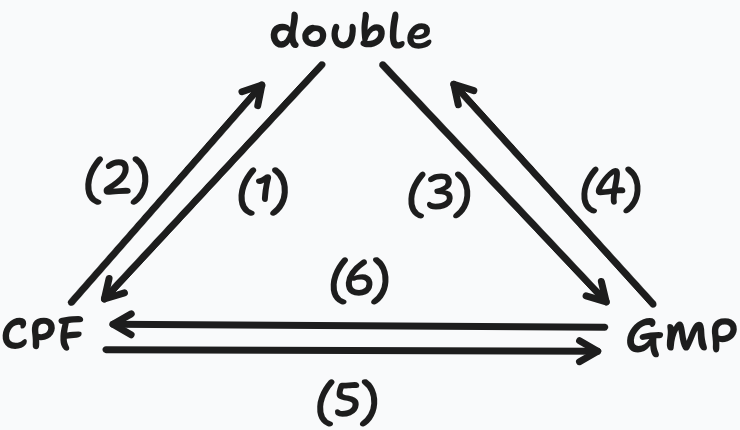

classDiagram
class FP {
-mpf_class number
+FP()
+FP(const double &)
+FP(const mpf_class &)
+FP(...)
+getNumber() mpf_class
}
class CPFloat {
-double number
+CPFloat()
+CPFloat(const double &)
+CPFLoat(...)
+operator double()
+getNumber() double
}
3 Conversions
3.1 Floating Point Types
In this project there are three groups of number formats:
- simulated low precision via CPFloat
- native C++ hardware types
floatanddouble - high / arbitrary precision via GMP
The low precision fp8, fp16, bfloat16 are simulated via CPFloat.
An overview of types defined in HDNUM:
| HDNUM / project type | Provider | Parameters | Corresponds to in Higham–Mary | Unit roundoff, roughly |
|---|---|---|---|---|
FP8 |
CPFloat | CPFloat<4,4> |
custom 8-bit / “quarter precision”-like format | \(2^{-4}\approx 6.25\cdot 10^{-2}\) |
bfloat16 |
CPFloat | CPFloat<8,8> |
Higham–Mary bfloat16 |
\(2^{-8}\approx 3.91\cdot 10^{-3}\) |
FP16 |
CPFloat | CPFloat<11,5> |
IEEE half precision, Higham–Mary fp16 |
\(2^{-11}\approx 4.88\cdot 10^{-4}\) |
FP32 |
native C++ float |
effectively (24,8) |
IEEE single precision, Higham–Mary fp32 |
\(2^{-24}\approx 5.96\cdot 10^{-8}\) |
FP64 |
native C++ double |
effectively (53,11) |
IEEE double precision, Higham–Mary fp64 |
\(2^{-53}\approx 1.11\cdot 10^{-16}\) |
FP128 |
GMP | approx. 128-bit, FP<64> |
software high precision / “quadruple-like” role, not necessarily IEEE fp128 |
depends on HDNUM wrapper |
FP256 |
GMP | approx. 256-bit, FP<192> |
multiprecision reference precision | depends on chosen GMP precision |
FP512, FP1024 |
GMP | approx. 512 / 1024-bit | multiprecision, beyond Higham–Mary’s standard table | depends on chosen GMP precision |
As a reminder the three-precision LU-IR algorithm is:
1. Compute the LU factorization PA = LU in precision uf.
2. Solve LU x0 = P b in precision uf; cast x0 to precision u.
3. While not converged:
4. Compute ri = b - A xi in precision ur.
5. Cast ri to precision u.
6. Solve LU di = P ri in precision uf; cast di to precision u.
7. Update xi+1 = xi + di in precision u.i.e.:
- Compute LU in \(u_f\)
- Solve the initial system in \(u_f\)
- Compute residuals in \(u_r\)
- Cast residuals to \(u\)
- Solve correction equations using the low-precision LU factors in \(u_f\)
- update in \(u\)
For the algorithm the intended mapping is:
| Algorithm role | Meaning | Typical project choices |
|---|---|---|
| \(u_f\) | factorization precision; low precision used for LU | FP8, bfloat16, FP16, sometimes FP32 |
| \(u\) | working precision; stores \(A,b,x_i\) and updates solution | usually FP32 or FP64 |
| \(u_r\) | residual precision; computes \(r_i=b-Ax_i\) accurately | FP64, FP128, maybe FP256 for experiments |
A reasonable set of experiments could be:
| Experiment | \(u_f\) | \(u\) | \(u_r\) |
|---|---|---|---|
| baseline sanity check | FP64 |
FP64 |
FP64 |
| classical mixed precision | FP32 |
FP64 |
FP64 |
| half/double refinement | FP16 |
FP64 |
FP64 |
| half/double with higher residual | FP16 |
FP64 |
FP128 |
| bfloat comparison | bfloat16 |
FP64 |
FP64 |
| very low precision stress test | FP8 |
FP64 |
FP128 |
3.2 Type Conversions
Again, the precisions for the algorithm are:
- \(u_f\): factorization / solve precision (low)
- \(u\): working precision (medium)
- \(u_r\): residual precision (high)
LU is computed in \(u_f\), the initial solution is cast to \(u\), the residual is computed in \(u_r\) and cast back to \(u\), the correction solve uses the low-precision LU factors, and the correction is cast to \(u\) before updating.
So the practically necessary conversions are:
| Conversion | ||
|---|---|---|
| \(u \to u_f\) | create low-precision copies of \(A\), \(b\), or residuals for LU / triangular solves. | |
| \(u_f \to u\) | bring \(x_0\) and correction \(d_i\) back to working precision. | |
| \(u \to u_r\) | compute \(r_i = b - Ax_i\) in high precision. | |
| \(u_r \to u\) | The residual is cast back before solving the correction equation. | |
| \(u_f \leftrightarrow u_r\) | not strictly needed | You normally convert through the working representation, or independently convert from the original \(A,b,x\). |
Implementing Conversions - Naive Approach
HDNum implements wrappers FP and CPFloat for the high-precision GMP and the low precision CPFloat types in the source files highprec_gmp.hh and lowprec_cpfloat.hh.
We are asked not to modify HDNum source files, instead implement explicit conversion functions:
template<class T_out, class T_in>
void convert(Vector<T_out>& out, const Vector<T_in>& in);
template<class T_out, class T_in>
void convert(DenseMatrix<T_out>& out, const DenseMatrix<T_in>& in);The approach is to assign to out element-wise in loops, where the values constructed from the corresponding elements of in. A naive approach is to do:
#pragma once
#include <cstddef>
#include "hdnum.hh"
namespace mpir {
// Vector conversion: resizes output if needed.
template<class T_out, class T_in>
void convert(hdnum::Vector<T_out>& out,
const hdnum::Vector<T_in>& in)
{
if (out.size() != in.size()) {
out.resize(in.size());
}
for (std::size_t i = 0; i < in.size(); ++i) {
out[i] = T_out(in[i]);
}
}
// Convenience wrapper: allocates a new vector.
template<class T_out, class T_in>
hdnum::Vector<T_out> convert_vector(const hdnum::Vector<T_in>& in)
{
hdnum::Vector<T_out> out(in.size());
convert(out, in);
return out;
}
// Matrix conversion: output matrix must already have correct shape.
template<class T_out, class T_in>
void convert(hdnum::DenseMatrix<T_out>& out,
const hdnum::DenseMatrix<T_in>& in)
{
if (out.rowsize() != in.rowsize() || out.colsize() != in.colsize()) {
throw std::invalid_argument(
"mpir::convert(DenseMatrix): output matrix has wrong size"
);
}
for (std::size_t i = 0; i < in.rowsize(); ++i) {
for (std::size_t j = 0; j < in.colsize(); ++j) {
out[i][j] = T_out(in[i][j]);
}
}
}
// Convenience wrapper: allocates a new matrix.
template<class T_out, class T_in>
hdnum::DenseMatrix<T_out> convert_matrix(const hdnum::DenseMatrix<T_in>& in)
{
hdnum::DenseMatrix<T_out> out(in.rowsize(), in.colsize());
convert(out, in);
return out;
}Where the type conversion is done via the assignment:
out[i] = T_out(in[i])for each element.
But this doesn’t work for all pairs of T_in, T_out because not all the necessary constructors or conversion operators are implemented in the classes CPFloat and FP
Which Conversions Work which Don’t ?
FP provides the constructors:
FP()FP(const double &)FP(const float &)FP(const int &)FP(const mpf_class &)FP<mm>(const FP<mm>&)
So the conversion:
double=> GMP
works
CPFloat provides the constructors:
CPFloat()CPFloat(const double &)CPFloat<mm, ee>(const double &)
So:
double=>CPFloat
works
CPFloat also provides the conversion operator operator double() const. Therefore
CPFloat=>double
works as well.
Because CPFloat can be converted to double and GMP can be constructed from a double:
CPFloat=> GMP
works too, by the implicit conversion of CPFloat to a double
But since the FP class doesn’t provide a double() operator the conversion
- GMP =>
double
doesn’t work.
Also CPFloat doesn’t implemenet a constructor that accepts a GMP type, (or also because FP doesn’t provide a double() operator) the conversion:
- GMP =>
CPFloat
doesn’t work.
We summarize this with the following diagram and table:

| Nr | Conversion | Works ? | Why ? |
|---|---|---|---|
| (1) | double \(\Rightarrow\) CPFloat |
Yes | CPFloat(const double &) |
| (2) | CPFloat \(\Rightarrow\) double |
Yes | CPFloat::double() |
| (3) | double \(\Rightarrow\) GMP |
Yes | FP(const double &) |
| (4) | GMP \(\Rightarrow\) double |
No | No FP::double() |
| (5) | CPFloat \(\Rightarrow\) GMP |
Yes | CPFloat is converted to double implicitly |
| (6) | GMP \(\Rightarrow\) CPFloat |
No | No FP(const CPFloat &) or no FP::double() |
So if the conversion operator FP::double() would be implemented both (4) and (6) would work. (6) would work too because GMP type would be implicitly converted to a double and a CPFloat would be constructed. But more explicitly a constructor CPFloat(const FP &) can be implemented too.
But since we are initially not allowed to modify HDNUM source code we take a different approach.
Structure of FP and CPFloat Classes
FP:FPhas a single private member variablenumberthat is an GMP type, i.e.mpf_class.- it can be accessed with the public getter
const getNumber() : mpf_class
CPFloat:CPFloathas a single private member variablenumberof typedouble.- it can be accessed with the public getter
const getNumber() : double
Note
There’s a mistake in HDNUM highprec_gmp.hh source file. The member variable number is documented as:
highprec_gmp.hh
private:
// stores a double to represent the low precision number
mpf_class number;The comment // stores a double to represent the low precision number is wrong, and is probably copied over by mistake from lowprec_cpfloat.hh:
lowprec_cpfloat.hh
private:
// stores a double to represent the low precision number
double number;Instead it should be something like:
// stores an mpf_class to represent the high precision GMP numberWith the above interface, given a GMP number, the double representation of the number can be obtained with:
hdnum::FP128 fp128_number(1.2345);
auto d = fp128_number.getNumber().get_d(); //d is doubleWhere we use the .get_d() method of mpf_class to get the double representation of the GMP number.
Implementing Conversions - Correct Approach
The main issue is that
out[i] = T_out(in[i]);does not work uniformly for all type pairs. We replace this direct construction step with:
out[i] = scalar_convert<T_out>(in[i]);This selects the appropriate conversion path at compile time, depending on the input and output types using standard library type traits and if constexpr
As summarized in Figure 3.1 and Table 3.1, the only conversions that do not work by direct construction are:
FP\(\Rightarrow\)double,FP\(\Rightarrow\)CPFloat
All other relevant cases can be handled by direct construction of the form:
T_out(x) // where x has type T_inIn C++, we can check at compile time whether an object of type T_out can be constructed from an argument type const T_in& using the standard library type trait:
std::is_constructible_v<T_out, const T_in&>This expression evaluates to true if such a construction is valid, and to false otherwise.
It can be verified that this indeed evaluates to false only for the conversion pairs:
T_out == double,T_in == FPT_out == CPFloat,T_in == FP
Then, the initial part of scalar_cast can be written as:
template<class T_out, class T_in>
T_out scalar_cast(const T_in& x)
{
if constexpr (std::is_constructible_v<T_out, const T_in&>) {
return T_out(x); // we use the direct construction
}
else { //remaining cases: FP => double || FP => CPFloat
...
}
}Logically, we know that the only possible cases in the else branch are:
T_out == double,T_in == FPT_out == CPFloat,T_in == FP
In both cases T_in is an FP type. as we’ve seen in Listing 3.1 the double representation of an FP number x can be extracted with:
x.getNumber().get_d()Since both CPFloat and double can be constructed from a double, we could simply write:
template<class T_out, class T_in>
T_out scalar_cast(const T_in& x)
{
if constexpr (std::is_constructible_v<T_out, const T_in&>) {
return T_out(x); // we use the direct construction
}
else { //remaining cases: FP => double || FP => CPFloat
return T_out(x.getNumber().get_d());
}
}However, this version is not robust enough because the else branch relies on our prior reasoning that only the two exceptional cases can reach it. The code itself does not express this assumption. If scalar_cast is later instantiated with another unsupported conversion pair, the compiler will still try to compile
x.getNumber().get_d()even if T_in is not an FP type. This should lead to implementation-dependent and potentially confusing error message.
Therefore, it is better to make the remaining cases explicit using another if constexpr condition:
template<class T_out, class T_in>
T_out scalar_cast(const T_in& x)
{
if constexpr (std::is_constructible_v<T_out, const T_in&>) {
return T_out(x); // direct construction works
}
else if constexpr (
is_hdnum_fp_v<T_in> &&
std::is_constructible_v<T_out, double>
) {
return T_out(x.getNumber().get_d());
}
else {
static_assert(always_false<T_out, T_in>::value,
"unsupported scalar conversion");
}
}Here, the helper trait is_hdnum_fp_v<T> detects whether a type T is one of HDNUM’s GMP-based high precision numbe types hdnum::FP<m>. This is a compile-time Boolean value, and analogous to the standard library traits such as std::is_constructible_v.
The implementation, given below, follows a common template metaprogramming partial specialization pattern:
// Detect HDNUM's GMP wrapper type hdnum::FP<m>
template<class T>
struct is_hdnum_fp_impl : std::false_type {};
template<int m>
struct is_hdnum_fp_impl<hdnum::FP<m>> : std::true_type {};
template<class T>
inline constexpr bool is_hdnum_fp_v =
is_hdnum_fp_impl<
std::remove_cv_t<std::remove_reference_t<T>>
>::value;The first part
template<class T> struct is_hdnum_fp_impl : std::false_type {};is the default case and says:
for an arbitrary type
T, it is falseSo:
is_hdnum_fp_impl<double>::value // false is_hdnum_fp_impl<float>::value // false is_hdnum_fp_impl<hdnum::FP16>::value // false, because CPFloat, not GMP FPThe second part
template<int m> struct is_hdnum_fp_impl<hdnum::FP<m>> : std::true_type {};is the specialization case, and says:
if the type has the form
hdnum::FP<m>, it is true.So:
is_hdnum_fp_impl<hdnum::FP128>::value // true is_hdnum_fp_impl<hdnum::FP256>::value // trueThe last part
template<class T> inline constexpr bool is_hdnum_fp_v = is_hdnum_fp_impl< std::remove_cv_t<std::remove_reference_t<T>> >::value;defines a compile-time boolean variable template. For example:
is_hdnum_fp_v<double> // false is_hdnum_fp_v<hdnum::FP128> // trueIt is analogous to standard library helpers such as:
std::is_arithmetic_v<T> std::is_constructible_v<T, Args...> std::is_convertible_v<From, To>and allows to write
is_hdnum_fp_v<T>instead of
is_hdnum_fp_impl<T>::valueThe keyword
inlineis needed for variable that are defined in header files.The use of:
std::remove_reference_t<T> std::remove_cv_t<T>makes the trait insensitive to references and
const/volatilequalifiers. For example this way all of the following are treated as the same:hdnum::FP<64> const hdnum::FP<64> hdnum::FP<64>& const hdnum::FP<64>&Without removing references and cv-qualifiers, the specialization would not match types such as
hdnum::FP<m>&
The final branch of scalar_cast
else{
static_assert(always_false<T_out, T_in>::value,
"unsupported scalar conversion");
}This branch is reached only if neither of the previous compile-time conditions applies:
std::is_constructible_v<T_out, const T_in&>is false, so direct construction does not work, and
is_hdnum_fp_v<T_in> && std::is_constructible_v<T_out, double>is also false, so the special FP => double / FP => CPFloat conversion path doesn’t apply either.
Therefore, if the compiler reaches this final ‘else’ branch, the requested scalar conversion is unsupported. In that case, we want compilation to fail with a clear error message.
The helper trait is defined as:
template<class...>
struct always_false : std::false_type {};This defines a type trait that is always false, regardless of the template arguments. For example:
always_false<int>::value // false
always_false<double, int>::value // false
always_false<hdnum::FP<64>, double>::value // falseThe class... syntax denotes a template parameter pack and means that always_false can accept any number of template type arguments. In our case we use two arguments:
always_false<T_out, T_in>::value It is important that always_false<T_out, T_in>::value depends on template parameters T_out and T_in, as it lets us create a compile-time false value that is evaluated when the templates are instantiated and not when the function is parsed. Omitting and writing simply static_assert(false, ...) would cause the assertion to be checked when the function template is parsed, and not only when the template is instantiated and the final branch is actually selected for the concrete instantiation.
scalar_cast Final Version
#pragma once
#include <cstddef>
#include <stdexcept>
#include <type_traits>
#include "hdnum.hh"
namespace mpir {
// Helper for dependent static_assert(false)
template<class...>
struct always_false : std::false_type {};
// Detect HDNUM's GMP wrapper type hdnum::FP<m>
template<class T>
struct is_hdnum_fp_impl : std::false_type {};
template<int m>
struct is_hdnum_fp_impl<hdnum::FP<m>> : std::true_type {};
template<class T>
inline constexpr bool is_hdnum_fp_v =
is_hdnum_fp_impl<
std::remove_cv_t<std::remove_reference_t<T>>
>::value;
// Scalar conversion
template<class T_out, class T_in>
T_out scalar_cast(const T_in& x)
{
if constexpr (std::is_constructible_v<T_out, const T_in&>) {
return T_out(x);
}
else if constexpr (
is_hdnum_fp_v<T_in> &&
std::is_constructible_v<T_out, double>
) {
return T_out(x.getNumber().get_d());
}
else {
static_assert(always_false<T_out, T_in>::value,
"mpir::scalar_cast: unsupported scalar conversion");
}
}
// Vector conversion
template<class T_out, class T_in>
void convert(hdnum::Vector<T_out>& out,
const hdnum::Vector<T_in>& in)
{
if (out.size() != in.size()) {
throw std::invalid_argument(
"mpir::convert(Vector): output vector has wrong size"
);
}
for (std::size_t i = 0; i < in.size(); ++i) {
out[i] = scalar_cast<T_out>(in[i]);
}
}
// DenseMatrix conversion
template<class T_out, class T_in>
void convert(hdnum::DenseMatrix<T_out>& out,
const hdnum::DenseMatrix<T_in>& in)
{
if (out.rowsize() != in.rowsize() || out.colsize() != in.colsize()) {
throw std::invalid_argument(
"mpir::convert(DenseMatrix): output matrix has wrong size"
);
}
for (std::size_t i = 0; i < in.rowsize(); ++i) {
for (std::size_t j = 0; j < in.colsize(); ++j) {
out[i][j] = scalar_cast<T_out>(in[i][j]);
}
}
}
// convenience function
template<class T_out, class T_in>
hdnum::DenseMatrix<T_out> convert_matrix(const hdnum::DenseMatrix<T_in>& in)
{
hdnum::DenseMatrix<T_out> out(in.rowsize(), in.colsize());
convert(out, in);
return out;
}
// convenience function
template<class T_out, class T_in>
hdnum::Vector<T_out> convert_vector(const hdnum::Vector<T_in>& in)
{
hdnum::Vector<T_out> out(in.size());
convert(out, in);
return out;
}
} // namespace mpir3.3 Testing hdnum_conversions.hpp
The file test_conversion.cc tets the conversion infrastructure implemented in hdnum_conversions.hpp. It’s goals are to test that:
scalar_cast<T_out>(x)compiles for representative type.scalar_cast<T_out>(x)returns the requested output type.- lossy low-precision conversions visibly loose information.
convert(Vector)appliesscalar_castelement-wise correctly.convert(DenseMatrix)appliesscalar_castelementwise correctly.- Vector and Matrix sizes are handled correctly.
- Wrong-sized output contaniers throw exceptions
- The convenience functions
convert_vectorandconvert_matrixallocate correctly.
Scalar Conversion Tests
The scalar tests check that
mpir::scalar_cast<T_out>(x)can be instantiated for representative input/output type paairs. For each pair, several sample values are tested:
0.0
1.0
-2.5
1.0 / 3.0
1.23456789012345The result is checked at compile time with
static_assert(std::is_same_v<decltype(y), T_out>);To verify that scalar_cast<T_out>(x) returns the requested output type T_out.
Both the input and the converted value are transofrmed to their approximate double representation with approx_as_double in order to compare the values with various assert and insepct the outputs.
Lossy Conversion Tests
It is verified that conversion from double to CPFloat indeed looses precision using a value such as 1.23456789012345.
This is only a useful sanity check that the conversion is really taking place.
Lossless Conversion Tests
It is also verified that conversion from a lower precision to a higher precision do not indeed loose information.
Vector Conversion Tests
Vector tests check the function
mpir::convert(hdnum::Vector<T_out>& out,
const hdnum::Vector<T_in>& in)for a representative vector of length 5 and checks that each component of the output agrees with applying scalar_cast<T_out> to the corresponding input component.
The comparison is performed approximately by conveting both values to double and using a small relative tolerance with the function
inline bool close(double a, double b, double atol = 0.0, double rtol = 1e-12)
{
const double scale = std::max(std::abs(a), std::abs(b));
return std::abs(a - b) <= atol + rtol * scale;
}This function says whether the two double values are close enough to be considered equal. The tolerance is scaled by the max value of the inputs.
The test also includes the edge cases:
- vector size 0
- vector size 1
Additionaly wrong-sized output vector is checked to verify whether an exception is thrown.
Finally the convenience function
mpir::convert_vector<T_out>(in)is tested, by verifying the resulting type and converted values.
Matrix Conversion Tests
The matrix tests check the function
mpir::convert(hdnum::DenseMatrix<T_out>& out,
const hdnum::DenseMatrix<T_in>& in)on a representative 5 x 5 matrix, by looping over the output values and comparing them against the result of applying scalar_cast to corresponding input entries.
The test includes the edge case of 1 x 1 matrix and a wrong-sized test.
The convenience fucntion mpir::convert_matrix<T_out>(in) is also tested.
Representative Pair Types
- Native \(\leftrightarrow\) Native:
FP32 <-> FP64
- Working precision \(u \rightarrow\) low precision \(u_f\):
FP64 -> FP16 / bfloat16 / FP8
- Low Precision \(u_f \rightarrow\) working precision \(u\):
FP16 / bfloat16 / FP8 -> FP64
- Working precision \(u \rightarrow\) residual precision \(u_r\)
FP64 -> FP128 / FP256
- Residual precision \(u_r \rightarrow\) working precision \(u\)
FP128 / FP256 - > FP64
- Low precision \(u_f \leftrightarrow\) high residual/reference precision \(u_r\)
FP128 / FP256 <-> FP16 / bfloat16 / FP8
- High precision \(\leftrightarrow\) high precision
FP128 <-> FP256
Covering the main conversion direction required later by the algorithm:
- \(u \rightarrow u_f\)
- \(u_f \rightarrow u\)
- \(u \rightarrow u_r\)
- \(u_r \rightarrow u\)
The tests also include low to high-precision conversions not required directly by the algorithm but useful nevertheless.